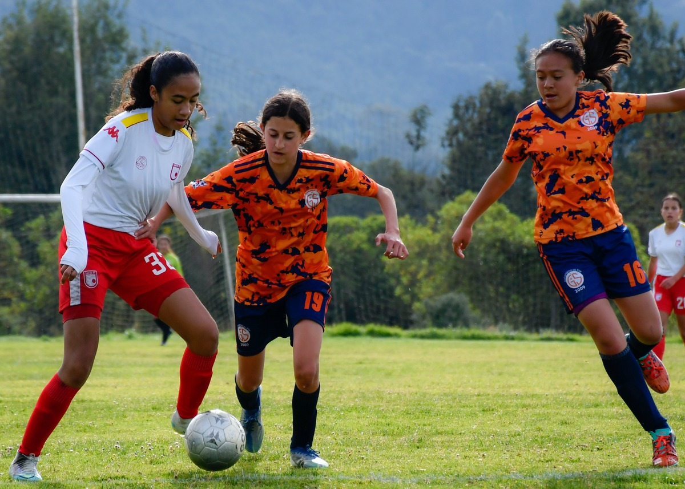
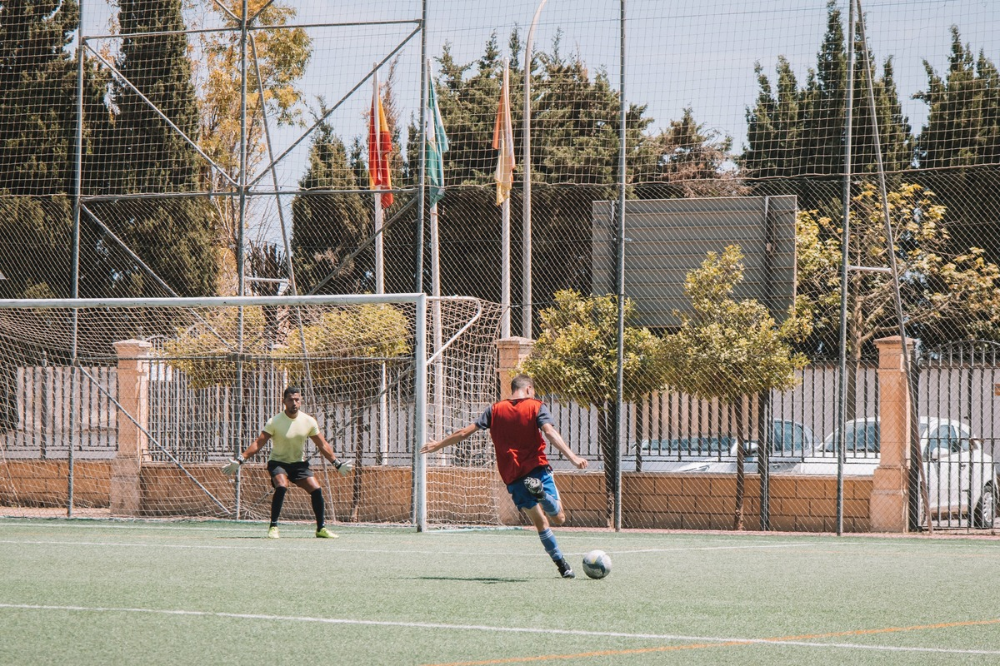

A place to organise friendly soccer games within the local community
About Us

Galway Soccer Club is a group set up for people in the local community looking to play and organise games of soccer, for fun, with like-minded people. We are a club full of a diverse range of people all looking to have fun and play some soccer. Our memebers regularly oranise events and tournaments for our members to participate in and enjoy. Its a fun community welcome to all.
Why Join Us?

Galway Soccer Club is a diverse and welcoming communtity and one that is open to everyone. No matter what your skill level evryone is welcome to join in and have some fun. You will meet new people and possibly make some new friends. New events are being organised by our members on a regulary basis, becoming a member will allow you to help us set up future events. You might learn new skills and improve your game all within a relaxed environment. Soccer is a great way to keep fit and healthy and joining our club is the best way to find people to play with.
Where We Play
Galway Soccer Club is set up primarily for people in Galway and its surrounding areas. We take advantage of the large range of faciliities in the Galway area. These range from full size pitches, to smaller ones for games with smaller groups. We use both outdoor and indoor faciliities to suit whatever type of soccerr games our members want to play.